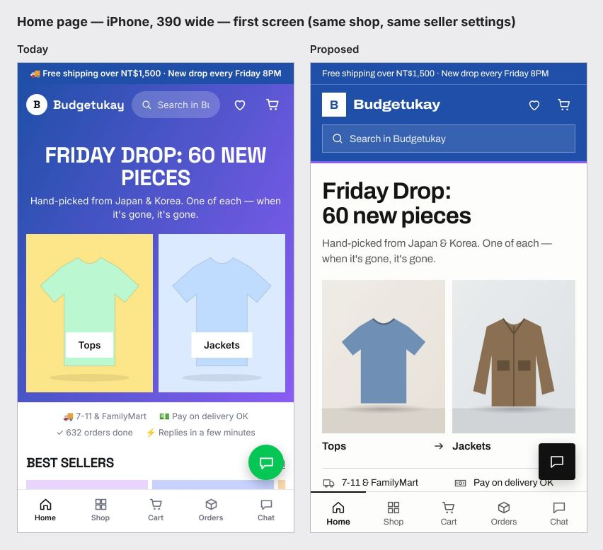
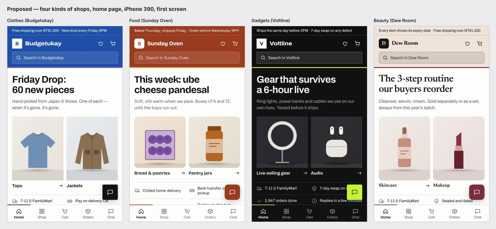

<title>Seller Website Redesign Proposal</title>
<meta name="claude:viewport-fit-sides" content="cover">
<link rel="stylesheet" href="https://fonts.googleapis.com/css2?family=Archivo:wdth,wght@62..125,400..800&display=swap">
<style>
/* layout: one reading column of ruled sections (the proposal's own "ruled sheet"); the picture viewer may run wider */
:root{--bg:#fdfdfc;--fg:#151515;--fg2:#5b5b58;--rule:#15151524;--rule2:#151515;--panel:#f1f0ed;--mark:#1f4fa8;--ok:#17794a;--warn:#8a5200;
  --f:"Archivo",system-ui,-apple-system,"PingFang TC","Noto Sans TC",sans-serif}
@media (prefers-color-scheme:dark){:root:not([data-theme="light"]){--bg:#111112;--fg:#f1f0ed;--fg2:#aaa9a4;--rule:#f1f0ed2b;--rule2:#f1f0ed;--panel:#1c1c1d;--mark:#8fb0ee;--ok:#5fd08f;--warn:#f0b455;color-scheme:dark}}
:root[data-theme="dark"]{--bg:#111112;--fg:#f1f0ed;--fg2:#aaa9a4;--rule:#f1f0ed2b;--rule2:#f1f0ed;--panel:#1c1c1d;--mark:#8fb0ee;--ok:#5fd08f;--warn:#f0b455;color-scheme:dark}
body{background:var(--bg);color:var(--fg);font:16px/1.55 var(--f)}
*{box-sizing:border-box}
.w{max-width:760px;margin:0 auto;padding-left:max(16px,env(safe-area-inset-left,0px));padding-right:max(16px,env(safe-area-inset-right,0px))}
.w.wide{max-width:1240px}
header .w{padding-block:36px 8px}
h1{font:760 clamp(30px,6vw,46px)/1.04 var(--f);font-stretch:108%;letter-spacing:-.02em;margin:0;text-wrap:balance}
.status{margin:14px 0 0;color:var(--fg2);max-width:60ch}
.status b{color:var(--fg)}
section{margin-top:44px}
h2{font:700 22px/1.2 var(--f);letter-spacing:-.012em;margin:0 0 12px;padding-top:12px;border-top:1.5px solid var(--rule2);text-wrap:balance}
p{margin:0 0 12px;max-width:66ch}
.muted{color:var(--fg2)}
ul.rows,ol.rows{list-style:none;margin:0;padding:0}
.rows li{padding:12px 0;border-bottom:1px solid var(--rule);display:grid;grid-template-columns:minmax(0,150px) minmax(0,1fr);gap:4px 18px}
.rows li>b{font-weight:650}
.rows li>span{min-width:0}
ol.rows{counter-reset:n}
ol.rows li{grid-template-columns:28px minmax(0,1fr)}
ol.rows li::before{counter-increment:n;content:counter(n);font:700 19px/1.3 var(--f);font-stretch:80%;font-variant-numeric:tabular-nums}
@media (max-width:560px){.rows li{grid-template-columns:1fr}ol.rows li{grid-template-columns:28px minmax(0,1fr)}}
.pick{display:flex;flex-wrap:wrap;gap:10px 22px;margin:4px 0 14px}
.seg{display:inline-flex;flex-wrap:wrap;border:1px solid var(--fg2)}
.seg button{font:500 14px/1 var(--f);color:var(--fg);background:none;border:0;border-right:1px solid var(--rule);min-height:44px;padding:0 13px;cursor:pointer}
.seg button:last-child{border-right:0}
.seg button[aria-pressed="true"]{background:var(--fg);color:var(--bg);font-weight:650}
.seg button:focus-visible,a:focus-visible{outline:2px solid var(--mark);outline-offset:2px}
.shot{border:1px solid var(--rule);background:var(--panel);overflow-x:auto}
.shot img{display:block;max-width:100%;height:auto;margin:0 auto}
.cap{font-size:14px;color:var(--fg2);margin:8px 0 0}
.two{display:grid;grid-template-columns:repeat(auto-fit,minmax(260px,1fr));gap:0 40px}
.num{font-weight:700;font-stretch:80%;font-variant-numeric:tabular-nums}
.scores{display:flex;flex-wrap:wrap;gap:8px 36px;margin:0 0 6px}
.scores div{font-size:14px;color:var(--fg2)}
.scores b{display:block;font-size:26px;line-height:1.15;color:var(--fg)}
table{border-collapse:collapse;width:100%;font-size:15px}
th,td{text-align:left;padding:9px 12px 9px 0;border-bottom:1px solid var(--rule);vertical-align:top}
th{font-weight:650;font-size:13.5px;color:var(--fg2)}
.tw{overflow-x:auto}
code{font:14px/1.4 ui-monospace,SFMono-Regular,Menlo,monospace;overflow-wrap:anywhere}
.yes{color:var(--ok);font-weight:650}.no{color:var(--warn);font-weight:650}
footer .w{padding-block:44px 56px;color:var(--fg2);font-size:14px}
</style>

<header><div class="w">
  <h1>Seller Website redesign proposal</h1>
  <p class="status"><b>Step 0: proposal and pictures only.</b> The live shop is unchanged and nothing is merged. The flow stays exactly as today: every page, section, step, field and button is kept, in the same order. Only the look is new.</p>
</div></header>

<section><div class="w wide">
  <h2>Today next to proposed</h2>
  <p class="muted">Same demo shop and the same seller settings on both sides (the "Ocean" colours a new website gets today). Product pictures on the right are drawn stand-ins for the seller's own photos.</p>
  <div class="pick" id="pick">
    <div class="seg" role="group" aria-label="Page" data-k="page"><button data-v="1-home">Home</button><button data-v="2-product">Product</button><button data-v="3-cart">Cart</button><button data-v="4-checkout">Checkout</button><button data-v="5-order">Order page</button></div>
    <div class="seg" role="group" aria-label="Screen" data-k="view"><button data-v="iphone390">iPhone 390</button><button data-v="android412">Android 412</button><button data-v="laptop1280">Laptop 1280</button></div>
    <div class="seg" role="group" aria-label="How much" data-k="part"><button data-v="first">First screen</button><button data-v="full">Whole page</button></div>
  </div>
  <div class="shot"></div>
</div></section>

<section><div class="w">
  <h2>What is wrong today</h2>
  <div class="scores"><div><b class="num">11 / 20</b>technical quality</div><div><b class="num">28 / 40</b>ease of use</div><div><b class="num">0</b>blocking problems</div></div>
  <p>A buyer can finish an order today. The flow is sound; the weak part is the look.</p>
  <ul class="rows">
    <li><b>Home, first screen</b><span>A blue-to-purple band with a centred headline in capitals. It is the template, not the seller, and every new website starts with it.</span></li>
    <li><b>Every page</b><span>The seller's logo is a 30 px circle. On phone inner pages the shop name is gone.</span></li>
    <li><b>Cart, checkout, order</b><span>The seller's colours vanish below the top strip. A selected delivery or payment choice is grey and looks switched off.</span></li>
    <li><b>Checkout, order</b><span>Boxes inside boxes: 5 outer boxes and about 10 inner ones.</span></li>
    <li><b>Order page</b><span>In the pay box the amount and the account number are ordinary text; "Copy" looks like text.</span></li>
    <li><b>Product cards</b><span>Names are cut to one line ("Korean Oversiz…") and prices do not line up.</span></li>
    <li><b>Photos</b><span>The same photo is cropped six different ways, and a label box sits in the middle of the two big tiles.</span></li>
    <li><b>Icons and text</b><span>Emoji stand in for icons in 18 places. On the home, 156 of 207 pieces of text are under 14 px.</span></li>
    <li><b>Tap size</b><span>On the phone home, 62 of 95 things to tap are under 44 px.</span></li>
  </ul>
</div></section>

<section><div class="w">
  <h2>The direction: catalogue and slip</h2>
  <p>Browsing pages look like a good mail-order catalogue: the seller's photos in one strict frame, ruled sections, prices as strong numerals. Paying pages look like one ruled sheet, like the parcel slip a buyer knows from 7-11 pickup. The shop's own paint is neutral paper and ink, so colour comes only from the seller and the photos.</p>
  <ul class="rows">
    <li><b>Type</b><span>One family per font choice. No capitals for titles. Fixed size steps, nothing under 12 px. Prices get their own style: bold, slightly narrow, same-width digits.</span></li>
    <li><b>Colour</b><span>Top colour 1 is a flat sign with the logo and shop name on every page. Top colour 2 is a thin stripe under it. Button colour is the main button only. Sale colour is the sale price only. "Selected" is a solid outline, never grey.</span></li>
    <li><b>Spacing</b><span>Sections are divided by one line above the title, not by boxes. Lists are ruled rows. Everything to tap is at least 44 px.</span></li>
    <li><b>Photos</b><span>One frame for the whole shop. Nothing sits on a photo except one small tag, the "+" and the heart. Names and prices go under the photo.</span></li>
    <li><b>Motion</b><span>Calm and short: buttons press in, choices change in 150 ms, panels slide. One special moment: a new order status lands like a stamp. Nothing loops; "reduce motion" turns it off.</span></li>
  </ul>
  <p class="muted" style="margin-top:14px">Measured on the mock: body text 17.9 to 1, helper text 6.7 to 1, no text under 12 px, and on cart, checkout and order page nothing to tap under 44 px.</p>
</div></section>

<section><div class="w wide">
  <h2>The same design for four kinds of shops</h2>
  <p class="muted">Clothes, food, gadgets and beauty: different logo letter, colours, font choice, corners, light or dark. No other change.</p>
  <div class="pick"><div class="seg" role="group" aria-label="Shop pictures" id="shops">
    <button data-v="shops_home_iphone390_first" aria-pressed="true">Home, first screen</button><button data-v="shops_home_iphone390_full">Home, whole page</button><button data-v="shops_product_iphone390_full">Product page</button><button data-v="shops_sundayoven_home_laptop1280_first">Food on a laptop</button><button data-v="shops_voltline_home_laptop1280_first">Gadgets on a laptop</button><button data-v="shops_dewroom_home_laptop1280_first">Beauty on a laptop</button>
  </div></div>
  <div class="shot"></div>
</div></section>

<section><div class="w">
  <h2>Decisions for the owner</h2>
  <ol class="rows">
    <li><span><b>Two top colours.</b> Today they blend. Proposed: colour 1 is the sign, colour 2 is the stripe. The two blend previews in the seller's editor would change to match.</span></li>
    <li><span><b>What a new website starts with.</b> Today: blue to violet. Proposed: a neutral start, so the seller's logo and photos lead until they pick a colour.</span></li>
    <li><span><b>New typefaces for the three font choices.</b> Modern: Archivo. Friendly: Bricolage Grotesque with Figtree. Classic: Newsreader with Archivo. The seller's setting itself does not change.</span></li>
    <li><span><b>Photo shape.</b> One tall frame for everyone, or a new seller setting "tall / square". The setting looks best for food and gadgets but needs one database line, so it is not "styles only".</span></li>
    <li><span><b>Search on inner phone pages.</b> Shown as an icon so the shop name fits beside the logo; it opens the same search. Or keep today's field and the name stays hidden there.</span></li>
    <li><span><b>Existing shops.</b> A redesign changes every live shop on the day it ships. Behind a switch for test shops first?</span></li>
    <li><span><b>Marketplace layout</b> (older shops) is not pictured yet. Same rules, but its home needs its own pictures before a build.</span></li>
  </ol>
</div></section>

<section><div class="w">
  <h2>What a build would touch</h2>
  <div class="tw"><table>
    <tr><th>Part</th><th>Changes?</th><th>Note</th></tr>
    <tr><td>The shop's style files and colour / font mapping</td><td class="no">Yes</td><td>Look only</td></tr>
    <tr><td>Markup of home, product, shop list, cart, checkout, order screens</td><td class="no">Yes</td><td>How they are drawn. Every field, step and button stays.</td></tr>
    <tr><td>Cart, checkout, payment, order, pricing, shipping logic</td><td class="yes">No</td><td>0 lines</td></tr>
    <tr><td>Seller's editor, payment and shipping settings, website orders</td><td class="yes">No</td><td>Except two preview chips if decision 1 is yes</td></tr>
    <tr><td>Database, server, printing, Chrome extension, phone apps</td><td class="yes">No</td><td>Unless decision 4 adds the photo-shape setting</td></tr>
  </table></div>
  <p class="muted" style="margin-top:12px">Full file list: <code>docs/design/website-redesign/PROPOSAL.md</code>, section 5, on branch <code>claude/serene-fermat-j04cf6</code>.</p>
</div></section>

<section><div class="w">
  <h2>Found on the way, not part of the design</h2>
  <ol class="rows">
    <li><span><b>Checkout on a phone:</b> after "Place order" with a missing field, the error messages are off screen and the page does not move.</span></li>
    <li><span><b>The red "LIVE" tag cannot be read today</b> (grey on red). One style rule beats another.</span></li>
    <li><span><b>The buyer downloads 517 KB of program before the shop shows.</b> Most of it is the seller app's texts in 8 languages.</span></li>
    <li><span><b>The cart panel and size sheet ignore the keyboard.</b></span></li>
  </ol>
</div></section>

<section><div class="w">
  <h2>Limits</h2>
  <p>The proposed pages are a separate mock, not the app: they show the look, not behaviour. Product pictures are drawn stand-ins, and chat and social marks are plain squares in the mock. Not pictured yet: dark cart, checkout and order page; the Marketplace layout; the shop list; error and empty states; other languages. Everything was looked at in one test browser, not on a real phone.</p>
</div></section>

<footer><div class="w">Reports in the repository: <code>audit.md</code>, <code>critique.md</code>, <code>PROPOSAL.md</code> under <code>docs/design/website-redesign/</code>.</div></footer>

<script>
(function(){
  var st={page:"1-home",view:"iphone390",part:"first"};
  var names={"1-home":"Home","2-product":"Product","3-cart":"Cart","4-checkout":"Checkout","5-order":"Order"};
  var img=document.getElementById("cmp");
  function paint(){
    document.querySelectorAll("#pick .seg").forEach(function(g){g.querySelectorAll("button").forEach(function(b){b.setAttribute("aria-pressed",String(b.dataset.v===st[g.dataset.k]));});});
    img.src="compare/"+st.page+"_"+st.view+"_"+st.part+".jpg";
    img.alt=names[st.page]+" page, "+st.view+", "+(st.part==="first"?"first screen":"whole page")+": today on the left, proposed on the right";
  }
  document.getElementById("pick").addEventListener("click",function(e){var b=e.target.closest("button");if(!b)return;st[b.parentNode.dataset.k]=b.dataset.v;paint();});
  paint();
  var shp=document.getElementById("shp");
  document.getElementById("shops").addEventListener("click",function(e){var b=e.target.closest("button");if(!b)return;this.querySelectorAll("button").forEach(function(x){x.setAttribute("aria-pressed",String(x===b));});shp.src="compare/"+b.dataset.v+".jpg";shp.alt="Proposed: "+b.textContent;});
})();
</script>
